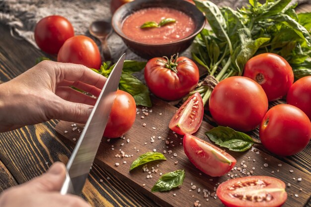
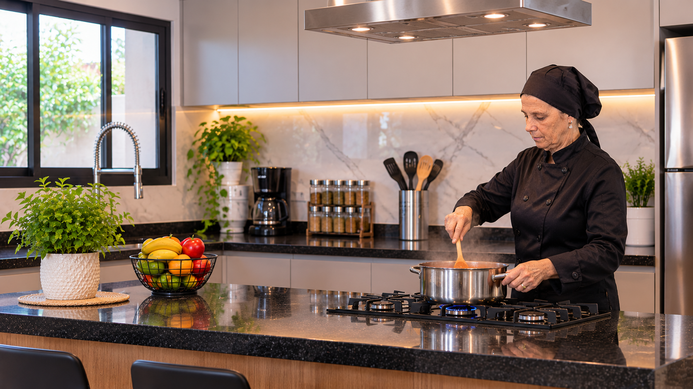
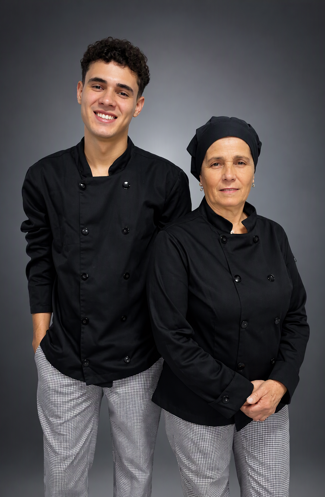

Preparação das refeições da semana
Preparamos suas refeições na sua própria casa, organizando o cardápio de acordo com suas preferências e sua rotina. Mais praticidade para a semana, com variedade e sabor em cada refeição.
Facilitando sua rotina através de uma experiência gastronômica.

Conheça nossos serviços personalizados para facilitar sua rotina e valorizar cada refeição.

Preparamos suas refeições na sua própria casa, organizando o cardápio de acordo com suas preferências e sua rotina. Mais praticidade para a semana, com variedade e sabor em cada refeição.

Cada cardápio é pensado individualmente, considerando preferências alimentares, restrições informadas, hábitos e orientações nutricionais compartilhadas pelo cliente.

Para facilitar ainda mais sua rotina, podemos cuidar da compra dos ingredientes necessários para o preparo das refeições, conforme combinado no atendimento.

Além das refeições principais, personalizamos as preparações conforme o que você precisa, buscando oferecer soluções que se encaixem naturalmente na sua rotina.
Conte um pouco sobre sua rotina, suas preferências e o que espera do serviço. Vamos preparar uma experiência mais direcionada para você.
A Cin-Chefe nasceu do sonho familiar de transformar mais de 15 anos de experiência gastronômica em uma solução prática, personalizada e cheia de sabor para o seu dia a dia. Unimos a vivência de uma cozinha profissional à gestão atenciosa para levar refeições sob medida até a sua casa.
Com mais de 15 anos de atuação em renomados restaurantes e buffets de Franca-SP, alia técnica profissional e aperfeiçoamento constante ao carinho da culinária caseira. Na Cin-Chefe, lidera o preparo das refeições e a criação de cardápios exclusivos, respeitando o gosto, as restrições alimentares e a rotina de cada família.
Formado em Matemática e professor de profissão, uniu a precisão lógica ao desejo de empreender em família. É responsável pela gestão administrativa, pelo apoio na cozinha e, principalmente, pelo atendimento ao cliente — garantindo uma comunicação próxima, organização eficiente e total alinhamento com as expectativas do público.

Foi uma ótima escolha! A comida tem aquele sabor caseiro, mas com um toque especial. Tudo fresquinho, bem temperado e feito com muito capricho. O atendimento também foi excelente. Com certeza recomendo!
Gostei muito do serviço! Conseguiram entender direitinho o que minha família gosta de comer e prepararam opções para todos. Além de saborosas, as refeições ficaram muito bem apresentadas. É muito bom ter esse cuidado dentro de casa!
Adorei a experiência! As refeições ficaram deliciosas, tudo muito bem preparado e organizado. Gostei bastante da variedade dos pratos e do cuidado. Facilitou muito minha rotina durante a semana